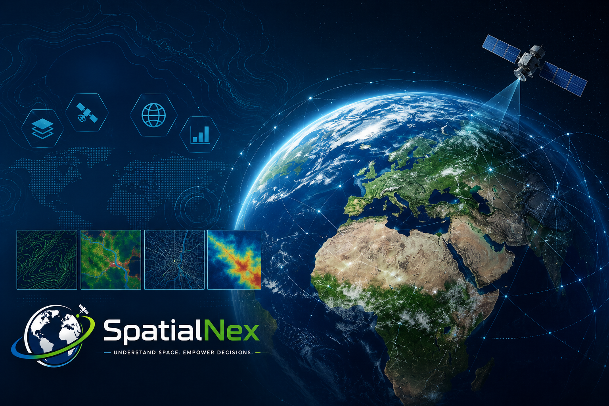

GIS Mapping & Spatial Analysis
Custom maps, spatial analysis, and decision-support outputs for planning, research, and operations.
GIS MAPPING & SPATIAL ANALYSIS
SpatialNexTech provides GIS mapping, spatial data analysis, and satellite-based mapping solutions for planning, research, land management, and environmental decision-making.

ABOUT US
SpatialNexTech helps businesses, researchers, and organizations turn location-based data into clear maps, analysis, and useful information for planning and action.
OUR SERVICES
Custom maps, spatial analysis, and decision-support outputs for planning, research, and operations.
Land-use maps and change analysis to help understand landscapes, development, and environmental trends.
Location analysis and suitability maps to support site selection, planning, and investment decisions.
Remote-sensing and Earth-observation analysis for environmental monitoring and change detection.
Clean, organized spatial data and clear visual outputs that make complex information easier to use.
Professional map layouts, GIS deliverables, and reports tailored to your project requirements.
FEATURED PROJECT
ENVIRONMENTAL INTELLIGENCE
A Google Earth Engine-based application designed to support mangrove monitoring, change detection, environmental analysis, and restoration planning.
OUR VISION
We envision accessible geospatial solutions that help people understand places, monitor environmental change, manage risks, and make better spatial decisions.
CONTACT US
Request a GIS quote or contact SpatialNexTech to discuss your mapping, spatial analysis, or remote-sensing needs.
Phone:
0615416420
Email:
paulspatialnex@gmail.com